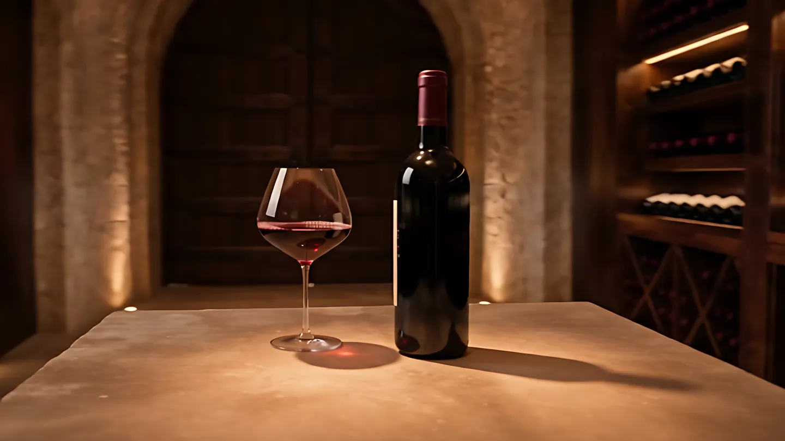

- Vins
- Spiritueux
- Aperçus des régions
- Cépages
Formations de produits
Formations
Des repères clairs pour mieux vendre, mieux servir et mieux conseiller, construits à partir de vos produits et de votre clientèle.
Demander une soumissionFormations de produits
Dégustations animées
Photographies
Martin Beauchamp · Fondateur | Animateur
Formations de produits
Des repères clairs pour mieux vendre, mieux servir et mieux conseiller, construits à partir de vos produits et de votre clientèle.
Demander une soumissionDégustations animées
Une dégustation commentée et vivante, pour des amis, une équipe ou un événement, autour d'un fil conducteur choisi ensemble.
Demander une soumission
Photographies
Des bouteilles, des tables et des soirées qui donnent envie : des images pour les cartes, les réseaux et les catalogues.
Demander une soumissionL'animateur
Fondateur | Animateur · Gestion TAO
« Un vin se comprend mieux quand on le raconte. »
Texte de présentation à écrire avec Martin : son parcours, ce qui l'a mené au vin et aux spiritueux, et sa façon d'animer une table.
Le déroulé
Étapes à valider avec Martin.
On parle de l'occasion, du groupe, du lieu et du budget.
Martin propose un thème, les produits et le déroulé de la séance.
Formation ou dégustation animée, chez vous, en entreprise ou en salle.
En option, des photos de l'événement et des produits, prêtes à partager.
Pour qui
Restaurants, bars, cavistes, entreprises, agences, producteurs ou particuliers : la formule s'adapte au groupe et à l'occasion.
Parler de votre projet